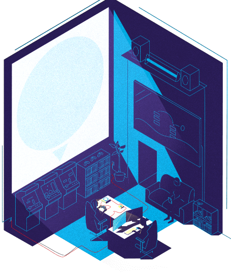

Subscribe to the podcast to receive new episodes as soon as we release them

Gaming consoles are pioneering machines. The Dreamcast pushed the limits of what even consoles could do. But that wasn’t enough to guarantee commercial success. Despite that failure, fans say no other console has accomplished so much.
The Dreamcast was meant to restore Sega to its glory days. After the disappointing Saturn, Sega pitted two teams against each other to build a new console. Andrew Borman describes the Dreamcast as a generational leap in hardware. Jeremy Parish explains how big a departure its production was from Sega’s usual processes. Mineko Okamura provides an insider’s insight on developing the Dreamcast. Brian Bacino recounts the console’s massive U.S. launch. But despite record U.S. sales, Sega had to pull the plug on the Dreamcast. Too good to let die, homebrewers like Luke Benstead plugged it back in.
00:07 - Saron Yitbarek
It's September 9th, 1999, 9/9/99, and somewhere in Japan, a spy has made her way deep into a mainframe computer room. She hacks in and disables the security. A guard investigates. She knocks him out with a well-placed kick. But the computer system, it comes to life. Everything goes red. A strange swirling pattern pops up on the monitors. It's obvious that the system is thinking. The spy bolts. The thinking computer is out to stop her. It tries to lock her inside the building. The spy smashes through a window, but not before she grabs a case and runs off with it. Inside that case, a prototype for a new kind of machine that could change everything.
01:06 - Saron Yitbarek
What I've been describing was a television commercial called Apocalypse. It was promoting the newest video game console from game company Sega, and no ordinary console either. This revolutionary device was called the Dreamcast, and that Apocalypse ad, what's inside the case the spy is stealing, is that very console.
01:29 - Brian Bacino
Well, then the Dreamcast box, it sort of spins off of the back of the thief and lands in the street, and the lid of this magic case that kept the box plugged in the whole time pops open. Camera zooms into the Dreamcast and into the window and goes down to the bottom where it appears that all the characters from all the games are all gathered. And there, we have Sonic down there, and he triumphantly says ...
02:00 - Sonic
We got it.
02:01 - Brian Bacino
And the whole place erupts, and everybody is screaming.
02:05 - Saron Yitbarek
That's Brian Bacino, the creative director of the Apocalypse ad campaign. And the Sonic he's referring to is Sonic the Hedgehog, Sega's famous game character.
02:16 - Saron Yitbarek
In the '90s, Sega was one of the most recognized video game companies in the world. But by the end of that decade, the competition was proving to be fierce, so Sega bet the house on Dreamcast. It would be the company's savior. The Apocalypse ad was described as, "The most epic video game commercial ever created." But how else to show off the most advanced game console ever made—so smart, you could almost say it really was thinking.
02:49 - Saron Yitbarek
Alas, the Dreamcast did not change the world. It barely made a dent. It's considered by some to be the greatest console that never stood a chance. It was the last console Sega would build, and it very nearly broke the company.
03:11 - Saron Yitbarek
In our penultimate episode of the season, a season all about hardware that changed the course of development, we look at the short-lived history of the Sega Dreamcast. Yet, despite its short shelf life, Dreamcast is still considered by many to be one of, if not the finest gaming consoles of all time. And 20 years after its death, it manages to live on in a very real way.
03:40 - Saron Yitbarek
I'm Saron Yitbarek, and this is Command Line Heroes, an original podcast from Red Hat.
03:48 - Saron Yitbarek
Like the thinking computer in the Apocalypse ad, that whisper ...
03:52 - Speaker 1
It's thinking.
03:53 - Saron Yitabrek
... became the company's new tagline for their new console.
03:56 - Brian Bacino
So the thought of having our VO always whisper ...
04:01 - Speaker 1
It's thinking.
04:02 - Brian Bacino
... We thought that would be a really neat way to sort of evolve that iconic Sega scream.
04:10 - Speaker 2
SEGA!
04:10 - Saron Yitbarek
Here was a console that got smarter as you played, at least that was the marketing pitch. A console that brought something new, something big, something revolutionary to the home video game market. A system built to serve the hard-core gamer. And inside the company, the thinking was that this console would make Sega the biggest name in video gaming.
04:34 - Brian Bacino
This was going to change gaming. This was going to change the world.
04:38 - Saron Yitbarek
So, what happened? To figure that out, we need to go back, all the way back to ...
04:44 - Speaker 3
Level I.
04:47 - Saron Yitbarek
Throughout the early '90s, Sega had a reputation for making games that were super cool and more mature than what the competition offered, particularly Nintendo and its princess-saving plumbers. They built this reputation with a very successful console, Sega Genesis.
05:05 - Alex Handy
Sega decided they were going to be really cutting edge, and these kids who had the Nintendos, well, now they're teenagers, and they want real sports games with real teams. They want bloody, fighting games like Mortal Kombat, which came later on. And they wanted a more mature, in-your-face sort of system.
05:22 - Saron Yitbarek
Alex Handy is the founder and director of the Museum of Art and Digital Entertainment in Oakland, California. He also works for Red Hat.
05:31 - Alex Handy
If you go back and look at ads from video game magazines in this period, they're kind of shocking. There are ads where there is like a bloody, severed arm with gristle coming off of it, and it says, "This is your best weapon against the bad guy." So, Sega does really, really well with this extreme, in-your-face sort of success of the Genesis with Sonic the Hedgehog sort of impertinence as opposed to Mario's OshKosh B'gosh overalls kind of happy theme.
06:00 - Saron Yitbarek
More than 30 million people bought the Sega Genesis, a 16-bit console that played games from cartridges. Gamers around the world loved it.
06:11 - Saron Yitbarek
But over time, Sega struggled to grow its user base. After Genesis, they introduced the 32-bit Sega Saturn. More powerful than Genesis, it could display both 2D and basic 3D graphics. But, the Saturn platform never really took off. Sales struggled. They managed to sell 9.2 million consoles, only a third of what the Genesis sold.
06:38 - Saron Yitbarek
Another sticking point: Developers found it challenging to program games for Saturn's proprietary, in-house-designed hardware. This was an issue Sega made note of for the future. Add to that, the launch of the Nintendo 64 and then Sony's first entry into the market with the PlayStation, and gaming was suddenly getting crowded and very competitive.
07:04 - Saron Yitbarek
In 1998, Sega posted a loss of $270 million. At Sega's North American headquarters, video game boss Bernie Stolar announces that quote, "The Saturn is not our future." He kills the console. With that, Sega turns its focus to building the next generation of console.
07:32 - Speaker 3
Level II: Building the Dream.
07:35 - Saron Yitbarek
The Sega Saturn had hurt the company's brand and bottom line. If Sega was going to reclaim its market share and reputation, this next console needed to be powerful, easy to code for, and unlike anything else available.
07:51 - Saron Yitbarek
Andrew Borman is the Digital Games Curator at The Strong National Museum of Play in Rochester, New York.
07:59 - Andrew Borman
They wanted to really show that this was a generational leap. This wasn't just a quick replacement to move on from the Sega Saturn, but that this was going to push things forward in graphics, in sound and online technology, and in just CPU processing, allowing for better AI than had been seen on previous consoles.
08:22 - Saron Yitbarek
Sega was going to level up their machine. At Sega's Japanese headquarters, they knew what they needed to do. Except, they weren't the only ones with the big ideas.
08:34 - Andrew Borman
But you also had a lot of infighting at Sega at the time. As they were starting to develop what would be a next-generation console, which would result in the Dreamcast, you also had Sega in the United States, Sega of America, developing their own idea of what a next-generation console may be.
08:52 - Saron Yitbarek
And so, both Sega Japan and Sega North America started developing two different systems simultaneously. Two teams were now competing for whose hardware design would win out over the other.
09:07 - Jeremy Parish
The American version was called Black Belt—that was its code name—and the Japanese version was code-named Dural after one of the bosses in the game Virtua Fighter.
09:17 - Saron Yitbarek
Jeremy Parish co-hosts a podcast called Retronauts. He says both the Japanese and American teams took the lessons learned from the Saturn console to heart.
09:28 - Jeremy Parish
They really wanted to make the system easy to develop for so that people who created games and programmed games would say, “Oh, well, you know, it's really easy to get great performance out of this system and to port games from other systems over here and to make them look better.” That was a kind of a key consideration for them.
09:47 - Saron Yitbarek
That pointed them away from designing custom silicone. Alex Handy:
09:52 - Alex Handy
The Sega Saturn was built from the ground up. I mean, they designed the chips, they designed the drives, they designed everything. When it came time to do the Dreamcast, Sega just went with an off-the-shelf processor, off-the-shelf 3D chips, and everything was just basically already designed, and they just put it all together as a systems' integrator. And it was a major step for the company after being completely focused on hardware innovation for most of the ’90s.
10:16 - Saron Yitbarek
But which chips would they use? On this, Sega Japan and Sega America had competing opinions.
10:25 - Jeremy Parish
The U.S. side was working with 3dfx, whereas the Japanese side was working with NEC to put together a PowerVR-based 3D solution. And for various kind of political reasons and legal reasons, Sega ended up going with the Dural version, the Japanese version of the hardware.
10:49 - Saron Yitbarek
So, gone was the American team's choice, the 3dfx. They went with the Japanese team's choice, the PowerVR chip. It's a decision that would come back to bite them later. From there, the rest of the hardware came together. DVD technology was still in its infancy and very expensive, so that was ruled out. But CD-ROMs, compact discs, weren't able to hold enough data to run the next gen of gaming graphics, sound, and complexity. So Sega built the console with a GD-ROM laser, essentially like CD-ROM systems, only these discs could hold a gigabyte of data. Now they had the brains of the console figured out. As Alex Handy puts it:
11:42 - Alex Handy
One of the real important things, the system did include a dedicated 3D rendering chip. That chip was able to do much more complicated 3D renderings than, say, the PlayStation. The Dreamcast is the line in the sand where we start to get 3D that will in the future still look fairly OK and you know what's going on. There's no suspension of disbelief going on.
12:04 - Saron Yitbarek
It truly was a next-gen system. Andrew Borman says the Dreamcast was shaping up to be the revolutionary console Sega had challenged themselves to build.
12:15 - Andrew Borman
The Dreamcast video output, it output over VGA at four ADP, which a lot of other consoles did not at the time.
12:23 - Saron Yitbarek
Even something as simple as detachable memory cards, visual memory units were designed in a completely new way.
12:31 - Andrew Borman
The VMU, the memory unit on the Dreamcast, really hinted at some of the second-screen experiences that would come later on.
12:39 - Saron Yitbarek
These VMUs had small screens on them and buttons, like a miniature Gameboy.
12:44 - Andrew Borman
You could have your save file, you could take it with you, you could play games on it. You could enhance your save in some way, shape, or form, and then bring it back to your home console.
12:54 - Saron Yitbarek
But that wasn't all. In the late ’90s, connecting consoles to the internet wasn't impossible, but it sure wasn't common. Online playability was still more of a concept than a reality. Sega saw an opportunity.
13:11 - Andrew Borman
Every Dreamcast came with a 56K modem, which seems antiquated now, but no other consoles were shipping with a 56K modem. No other consoles were shipping with the ability to have a web browser on it. No other console would be able to download content, bar a few accessories at the time. This was stocked right out of the box—you could do all of this.
13:36 - Saron yitbarek
Here's Mineko Okamura, CEO of Grounding Inc. She was an assistant producer at Sega during the Dreamcast era.
13:50 - Mineko Okamura
Our goal was at the time, in addition to core Sega fans, we wanted to attract new Sega game lovers. First of all, it had a really cutting-edge technology or feature that the Dreamcast was able to connect to the internet, and probably a lot of people still can recall a game called Seaman, and then it was introduced with a voice recognition feature. Although today it's very common, but at the time it was new that you could download additional programs through online.
14:26 - Speaker 3
Level III: The dream is real.
14:31 - Saron Yitbarek
While production continued on the new console, the Sega Saturn got retired. But with Sega's lack of presence, it left a gap in the market that needed filling. 1999 gave Sega a narrow window to recapture their share of the market. All they needed to do was nail the launch as perfectly as possible. Jeremy Parish:
14:56 - Jeremy Parish
They gave it their all. The Dreamcast launch was kind of widely regarded as the biggest entertainment launch of all time. They really hit on all the marks. To me, it was kind of a model system launch, like that is how they should be done. The hype and the advertising was on point; it was intriguing.
15:16 - Saron Yitbarek
Before the launch, the hype machine driven by Brian Bacino’s, “It's thinking” ad campaign, was working flawlessly. Here's Andrew Borman:
15:26 - Andrew Borman
The Dreamcast of the United States had 300,000 units pre-ordered prior to launch, so that was a new record. Things were looking really, really good for Sega going into 9/9/99.
15:40 - Saron Yitbarek
And then the day arrived. September 9th, 1999. Launch day in the U.S. The Dreamcast went on sale for $199. It was a historic launch day. The company made $100 million in the first 24 hours, a record for the entire industry. They sold every console available.
16:11 - Andrew Borman
Store fronts were still calling, saying, “Hey, we need more Dreamcast consoles,” especially going into that first holiday season.
16:17 - Saron Yitbarek
They made sure lots of games were available at launch as well. 18 in total, from fighting to action to racing to sports.
16:26 - Andrew Borman
Some of my favorite games, especially around that launch period, were Sonic Adventure, which Sonic finally in 3D in a really great way, but also Soulcalibur. I was a huge fighting game fan, especially back then, and Soulcalibur was not only arcade perfect, but it was better than the arcade version, which was based on PS1 hardware. So with the Dreamcast and its fancy new graphics, Soulcalibur was really so much better than I ever expected a fighting game could be at the time.
16:58 - Saron Yitbarek
Gamers loved the Dreamcast library. It eventually grew to over 600 titles. Even Brian Bacino couldn't help but indulge in a few.
17:09 - Brian Bacino
My personal thing that I got completely obsessed with was Crazy Taxi. I just could not get enough of that game, and the feeling and the 3D graphics of that game were so much fun.
17:22 - Saron Yitbarek
Dreamcast was very clearly a next-gen console, and its fans loved the hardware. But the games themselves offered something different too.
17:31 - Jeremy Parish
You had just so many offbeat, inventive never-before-seen game concepts.
17:38 - Saron Yitbarek
One required a pair of maracas to interact with the game. Another game made you interact with a bizarre fish with a human face.
17:47 - Jeremy Parish
You had controllers coming out that were just ludicrous. You had a game controller that was like a traditional game controller, but it had a full ASCII keyboard in the middle, so you could type to people when you're playing online with them. And then that would also work with the game Typing of the Dead, which was like a haunted house shooter. Except instead of shooting at the zombies, you were typing weird, fragmented phrases at them, like random English phrases. It was just such a weird and fantastic system.
18:22 - Saron Yitbarek
Sega sells its millionth Dreamcast within two months of launch. By Christmas, it has 31% of the North American market. They'd done it. The Dreamcast was a hit. But not long after that tremendous launch, the Dreamcast dream turned into a nightmare.
18:47 - Speaker 3
Level IV: The dream dies.
18:52 - Saron Yitbarek
Despite those record-breaking sales and the accolades from press and hard-core gamers, the company had some big problems. For starters, the Dreamcast wasn't doing well in Japan. They had launched it a year earlier, and the sales were poor. It was costing the company money.
19:10 - Jeremy Parish
Yeah, the Japanese launch, I think it came too early. The hardware production processes weren't as mature and reliable as they needed to be. And as a result, there were some defects and shortages and supply line issues. But also, a bigger problem is that there just weren't that many games available at launch for Dreamcast in Japan. I think there were three games.
19:35 - Mineko Okamura
[Foreign language 00:01:37]
At the time when Dreamcast actually came out, we had this commercial which left a very strong impression on people which was performed by Mr. Yukawa who was one of our board members. And it was really well sold, but then it quickly became sold out, and it actually took us time to reload the stocks, which was quite unfortunate because people had to wait for a long time, and then sales start to decline.
20:11 - Saron Yitbarek
Production problems continued after the U.S. launch too. A lack of supply hampered sales.
20:17 - Andrew Borman
There was a shortage of the PowerVR chip that was powering the Dreamcast, which simply meant that they couldn't make enough systems to go around, even if they had people willing to buy them. Even though the systems were selling relatively OK, they just didn't have enough consoles to go around.
20:38 - Saron Yitbarek
The PowerVR chip created another problem. It cost them the support of some major game studios, Electronic Arts in particular. EA didn't have a team of programmers that could code for the PowerVR chip, so they passed on Dreamcast. Here's Jeremy Parish:
20:56 - Jeremy Parish
Ultimately that did really, I think, hurt the company because Electronic Arts was a huge player in the Sega Genesis' success, and putting their sports games like Madden NFL onto any system is a huge boon for that system because you have millions of people who are going to buy those games every year.
21:16 - Saron Yitbarek
Hardware issues aside, they'd won over hard-core gamers, but casual gamers weren't yet convinced. The Sega hype cycle was over. Dreamcast was here, but already a new hype cycle had ramped up. This time for Sony and the PlayStation 2. Here's Andrew Borman again:
21:37 - Andrew Borman
Sony did a very, very great job of hyping it up. With that hype machine, people were ready for the PlayStation 2 and unfortunately, I think by the holiday season in December 2000, the system already wasn't selling well. The system being Dreamcast.
21:56 - Saron Yitbarek
Sega tried everything to push sales up, but little seemed to work. They slashed the console's 199 price tag at great financial cost. They launched an online gaming portal, SegaNet, in 2000. They offered free subscriptions to pull in more users, but the company kept bleeding cash. In January of 2001, Sega announced it would cease production of their next-gen console. Sixteen months after it launched, the Dreamcast was dead. The last batch of the consoles sold for $50 apiece. When it was all over, Sega had sold just over 9.1 million consoles, even fewer than the failed Sega Saturn it replaced.
22:55 - Speaker 3
Final level: The dream reborn.
23:00 - Jeremy Parish
I was disappointed because, I think, Sega has a long history behind it and as an important player in the games industry, and they always brought a special kind of point of view to the games that they created. And really the Dreamcast was, in my opinion, their most creatively fertile platform ever. Just the sheer amount of invention and off-the-wall, fresh game ideas that came out of Dreamcast, no one has done that before or since. So, yeah, there was a real sense of loss when they stepped away.
23:31 - Saron Yitbarek
After Dreamcast, Sega gave up on consoles altogether. Technical support for Dreamcast continued through to 2007, after which Dreamcast owners were on their own. So, what do you do when you have a discontinued, unsupported but beloved gaming console sitting on your shelf at home? Well, for some Dreamcast super fans, it was the beginning of a do-it-yourself revival.
24:00 - Andrew Borman
When you're talking about Homebrew, when you're talking about just the ability to play really great games for an older console, the Dreamcast community is a really diehard community.
24:12 - Saron Yitbarek
You see, the Dreamcast console never really died for a lot of its super fans. They loved it so much that they kept it alive for themselves and others. And as a community, they thrived. Like the Homebrew computer club we talked about in episode 3, they also called their community Homebrew because they tinkered too. They ported copies of games from other platforms or built entirely new games from scratch. All for a machine that was meant for the hardware graveyard.
24:45 - Alex Handy
Let's see, I've found Armed 7, Finding Teddy, Unit Yuki, Magic Pockets, and Captain Tomaday, which seems to be about a flying tomato. We've got a side-scrolling shooter. We have a point-and-click adventure. We have a platform game. You don't really get to predict or understand why people do this stuff. It is a labor of love, it takes a lot of work, and it's people do what they want to do in the Homebrew scene, as we call it.
25:17 - Andrew Borman
One of the examples that I like to point to is Bleemcast, which was a Sony PlayStation emulator for the Dreamcast. So, the exclusive Gran Turismo 2 for the PlayStation could now be played on Dreamcast. Not only could it be played on Dreamcast, it would look better on Dreamcast. Other emulators were developed for the system, including a Sega Genesis, Nintendo Entertainment System emulators.
25:43 - Saron Yitbarek
A big reason why this is possible is because clever Dreamcast owners long ago discovered that the system's antipiracy protections were pretty easy to work around. And once they figured that out, they realized they could make the Dreamcast play pretty much whatever classic game or indie title they could throw at it.
26:06 - Luke Benstead
Indie developers started working on it even in 2001, and that ability to write games and software for it and not have to jailbreak it or do anything invasive has really helped because it's a low barrier to entry. So, people can go online and they can download new games and stuff.
26:25 - Saron Yitbarek
This is Luke Benstead. He's part of the Dreamcast Homebrew community. Luke discovered that people were hacking together ways to plug old Dreamcasts into today's modern internet so they could access games online.
26:40 - Luke Benstead
I'd always known that people were still connecting their Dreamcasts to the internet because there was this thing called the PCDC server. So people used to have their Windows PC, they used to plug a USB modem into it, and then they used to plug the Dreamcast into that. And if they dialed up on their Dreamcast and they ran the right bit of software at the right time on the PC, they could route it through.
27:03 - Luke Benstead
And so I think about sort of 2010, I went online and I bought a USB modem to try this out. And that just sat in a drawer. I never actually got around to trying it. And then in 2015, my first daughter had just been born, I was on paternity leave, and I had just acquired a Raspberry Pi, and I suddenly realized that I could combine these things.
27:28 - Saron Yitbarek
But before he could share his Raspberry Pi solution with the community, there was a hurdle to the modern internet that Luke had to overcome.
27:36 - Luke Benstead
The problem with the PCDC service app is that, although you could make it work, a lot of the games didn't work because the Dreamcast would look for a dial tone. When you clicked dial connect in the game, a lot of the games would expect there to be a dial tone. And clearly there's not a dial tone if you just plug it into a computer. So when I started looking at getting this Raspberry Pi to run this PCDC service app, one of the things I did was downloaded the recording of a dial tone, and I made it so that the software that I wrote, which was written in Python, would play that sound to the modem. And the Dreamcast would hear that down the line and think that it was connected to a real phone line, and so it would dial. That's what got it started. The whole DreamPi thing was just me fiddling around on paternity leave.
28:28 - Saron Yitbarek
Once Luke got past the dial tone issue, he faced more challenges. He needed to rally people from the community to get to the next level.
28:39 - Luke Benstead
I started writing this Python script, and then it just got more and more complex as time went on, because a good example is Quake III has always worked online if you have the U.S. version. If you have the panel version in like the UK version, it did a kind of authentication with an online server before it would let you connect. So one of the side products from the DreamPi was trying to reverse engineer this authentication server, this Dreamarena thing, so that anyone in the UK, if they had Quake III, they could dial up. That led to a chain reaction of games coming online because it attracted a guy called—I don't know how to pronounce his internet name; it’s something like Shuouma. He has been responsible for reverse engineering the game servers that the Dreamcast connects to. Because obviously, all the servers got turned off. And when he saw what I was doing with the Dreamarena, reverse engineering, he reversed engineered the Dreamarena stuff. Starlancer server was the next one because although that server was still online, it was very buggy. And then that's led to him reverse engineering all of the games that are online at the moment. And there's actually a third person who's involved in this whose internet handle was PCWizard13. And he has been long running in the community longer than me. He used to organize weekly game meetups. So the combination of me developing the DreamPi, Shuouma developing the servers, and him organizing the community has allowed that thing to snowball.
30:12 - Saron Yitbarek
The DreamPi software is open source and shared with the community, allowing anyone to build more games for the Dreamcast or rebuild their favorite classics.
30:23 - Luke Benstead
So the website is dreamcast.online, and if you go there, you can see who's online or who's been online. You can see what games they're playing. And that's theoretically, it can just keep going, because everything's out there, it's all open.
30:34 - Saron Yitbarek
Twenty years after the launch and then death of Sega's last gaming console, a small group of loyal fans keep the dream of Dreamcast alive. The console might have failed commercially, but the ideas this small, gray white machine contained, the thinking that went inside the box, was ahead of its time. Here's Mineko Okamura again:
31:02 - Mineko Okamura
It's very interesting that these games are coming back, which kind of made me feel that maybe Dreamcast came out too early. Because now technology is more developed today, people can probably maybe fully enjoy the future of dreaming those Dreamcast games.
31:21 - Saron Yitbarek
Sega may have lost the console game to Sony and Nintendo and even Microsoft's Xbox. But for a brief moment when Sega was a big winner in the console wars, their hardware helped push the entire industry forward. That's how Brian Bacino, the man behind the Dreamcast ad campaign, sees it, at least.
31:42 - Brian Bacino
I think that moment in time is when gamification probably came of age without anyone knowing it. The idea that everybody likes to play games in one way or another. And if you can come up with something that catches their curiosity in a way that just falls into their daily use of technology, they're going to play. And I think that was probably the beginnings of that realization.
32:15 - Saron Yitbarek
We've talked about some amazing pieces of hardware these past few weeks. But before we completely close the doors on this season, there's just one more thing. In two weeks time, we're going to be talking to a very special command line hero about his experience with many of the machines we featured on the show. And for some great research on all those machines, mini computers, mainframes, personal computers, floppies, the PalmPilot, open source hardware game consoles, and more, go to redhat.com/commandlineheroes. I'm Saron Yitbarek. Keep on coding.
Further reading
It's Thinking Ad by Sega
The Dreamcast Died Too Soon, but Its Legacy Lives On by Ben Lindbergh
IGN Presents the History of Dreamcast by Travis Fahs
Dream on: inside the Dreamcast's homebrew scene by Robin Wilde
Bonus episode
Back in Season 2, we covered the ties between gaming and open source. Warren Robinett shares his experience developing Adventure for Atari and sneaking in the very first Easter Egg.
Featured in this episode
Get the newsletter
After each episode drops, we'll send you commentary from the Command Line Heroes team, as well as links that help you take a closer look at the topics we cover. It's as simple as that.
Presented by Red Hat
For 25 years, Red Hat has been bringing open source technologies to the enterprise. From the operating system to containers, we believe in building better technology together–and celebrating the unsung heroes who are remaking our world from the command line up.